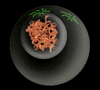
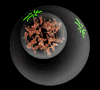
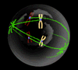
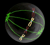
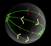
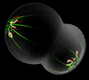
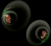

|

The
Biology Project > Cell
Biology > Intro.
to Cell Cycle & Mitosis > Tutorial
The Cell Cycle & Mitosis Tutorial
Mitosis
What is (and is not) mitosis?
|
Mitosis is nuclear division plus cytokinesis, and produces two identical
daughter cells during prophase, prometaphase, metaphase, anaphase, and
telophase. Interphase is often included in discussions of mitosis, but interphase is technically not part of mitosis, but rather encompasses stages G1, S, and G2 of the cell cycle.
|
Interphase & mitosis
Interphase

|
The cell is engaged in metabolic activity and performing its prepare for mitosis (the next four phases that lead up to and include nuclear division). Chromosomes are not clearly discerned in the nucleus, although a dark spot called the nucleolus may be visible. The cell may contain a pair of centrioles (or microtubule organizing centers in plants) both of which are organizational sites for microtubules.
|
Prophase

|
Chromatin in the nucleus begins to condense and becomes visible in the light
microscope as chromosomes. The nucleolus disappears. Centrioles begin moving
to opposite ends of the cell and fibers extend from the centromeres. Some fibers
cross the cell to form the mitotic spindle.
|
Prometaphase

|
The nuclear membrane dissolves, marking the beginning of prometaphase. Proteins
attach to the centromeres creating the kinetochores. Microtubules attach
at the kinetochores and the chromosomes begin moving.
|
Metaphase

|
Spindle fibers align the chromosomes along the middle of the cell nucleus. This
line is referred to as the metaphase plate. This organization helps to ensure
that in the next phase, when the chromosomes are separated, each new nucleus
will receive one copy of each chromosome.
|
Anaphase

|
The paired chromosomes separate at the kinetochores and move to opposite sides
of the cell. Motion results from a combination of kinetochore movement along
the spindle microtubules and through the physical interaction of polar microtubules.
|
Telophase

|
Chromatids arrive at opposite poles of cell, and new membranes form around the
daughter nuclei. The chromosomes disperse and are no longer visible under
the light microscope. The spindle fibers disperse, and cytokinesis or the
partitioning of the cell may also begin during this stage.
|
Cytokinesis
 |
In animal cells, cytokinesis results when a fiber ring composed of a protein
called actin around the center of the cell contracts pinching the cell into
two daughter cells, each with one nucleus. In plant cells, the rigid wall
requires that a cell plate be synthesized between the two daughter cells.
|
Mitosis
animation
(480 k)

|
OR
|
Mitosis
animation
Flash |
|
Previous | Next
Vocabulary
The
Biology Project > Cell
Biology > Intro.
to Cell Cycle & Mitosis > Tutorial
http://www.biology.arizona.edu
All contents copyright © 1997 - 2004. All rights reserved.
|